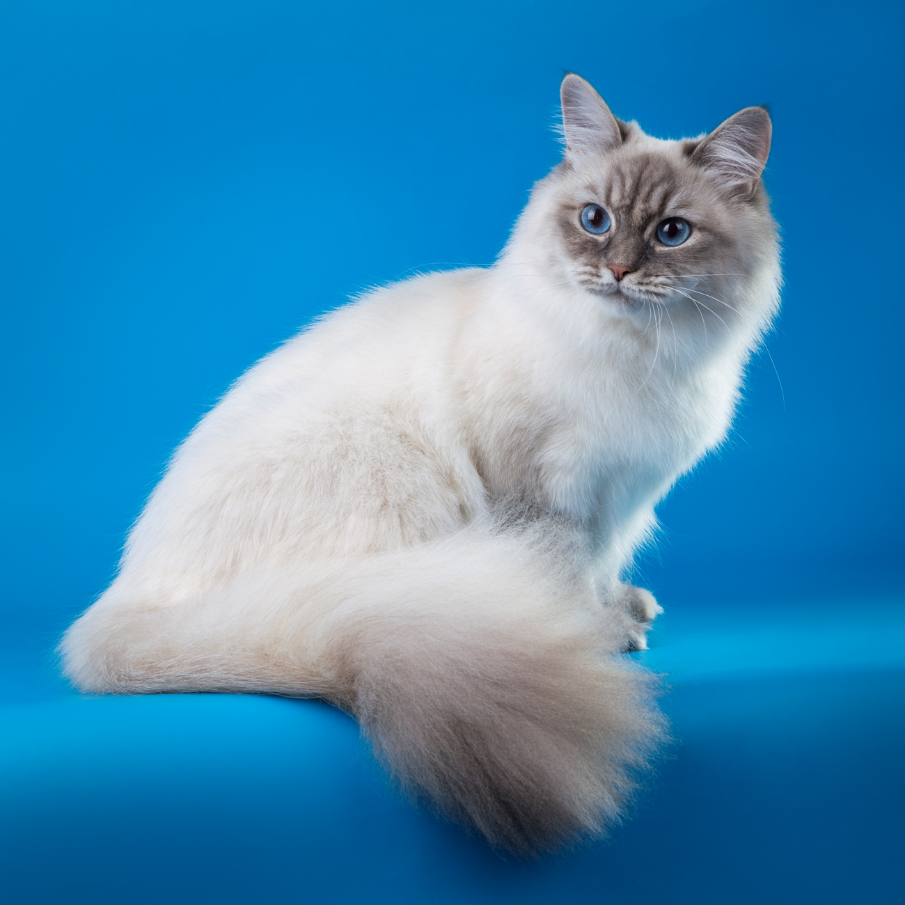

Hi, I'm Cindy 🐾
Siberian Neva Masquerade cat - Living in Norway
I'm a young and energetic Siberian Neva Masquerade cat with striking blue eyes. I never sit still: there's always somewhere to explore and something to discover. Norway is my playground and I make the most of every day.
🐈 Get random cat fact🐱 About my breed 🐱
The Neva Masquerade is a colour-point variety of the Siberian cat, originally from Russia. The name comes from the Neva River in Saint Petersburg and the "masquerade" mask-like markings on the face. All cats of this breed have deep blue eyes — one of their most recognisable features. They are known for being friendly, playful and very loyal to their family.
😸 My story 😸
Theo is a young Neva Masquerade who currently lives in Norway. From an early age it was clear he was not an ordinary lap cat — he was always the first to the door, always ready for the next adventure. Whether it's a walk in the forest, a trip to the lake, or just exploring the neighbourhood, Theo is always up for it.
💙 Things I love 💙
- 🎣 fishing trips
- 🏔️ hiking
- 🌲 off-leash walks
- 🐠 fish
- 🔥 fireplace
- 🌊 swimming